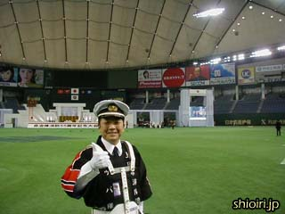
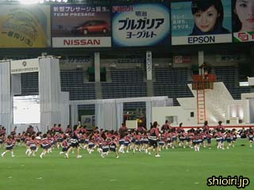
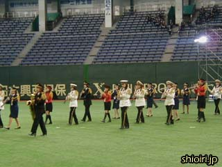
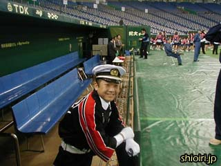

２００３年１１月２０日
東京ドームで行われた自治体消防５５周年記念大会に参加してきました。
この大会には全国から５つの消防ラッパ隊が参加し、我々上田市消防団ラッパ隊は総勢４１名で大会旗の入場行進、および大会宣言でのファンファーレ演奏を担当しました。 |
|  |
東京ドームのグラウンドに立てるなんてめったにない機会。到着早々、みんな興奮気味にグラウンドを歩き回ってます。 |
|  |
幼年消防クラブの子供たちも、練習に余念がありません。 |
|  |
全国から集まってきた女性団員による合同の音楽隊。長時間の練習、お疲れさまでした。ドラムマーチなしでの吹きっ放しはさぞかしキツかったことでしょう。 |
|  |
そんな中、リハーサル順番待ちの我々はダッグアウトに入って記念撮影したりと、けっこう自由にドームの雰囲気を楽しんでました。 |
|
次のページ≫ |